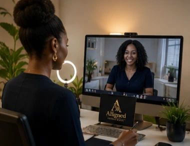

Remote Online Notary
Remote Online Notary Services
Complete notarizations securely online with a Texas-commissioned Remote Online Notary. Clients may be located anywhere while the notarization is performed under Texas notarial law.

Common Documents
Online notarization for modern document needs.
- Affidavits
- Powers of attorney
- Business forms
- Medical documents
- Travel consent forms
- Acknowledgments
- Jurats
Texas Remote Online Notary laws and identity verification requirements apply.